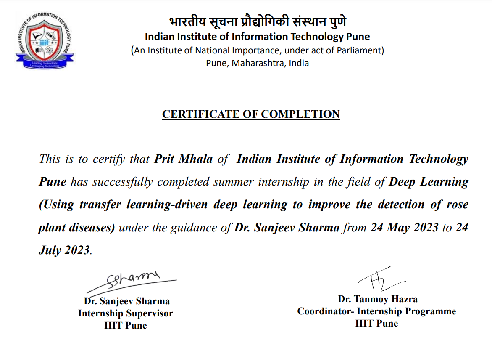
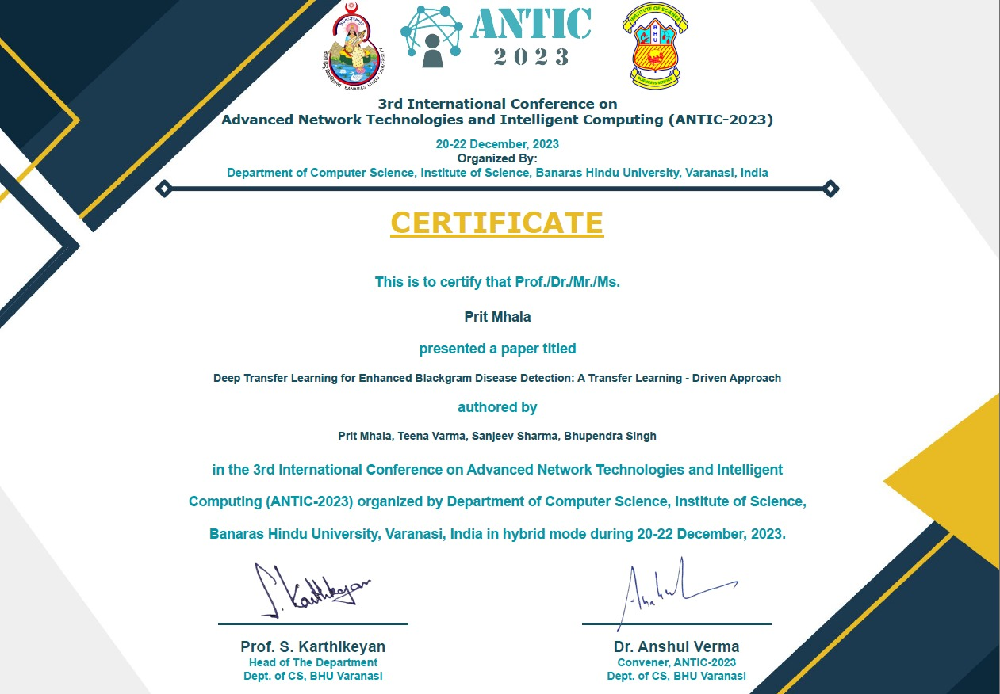

Contact
Phone: +91-9082718281
Email: 112115089@cse.iiitp.ac.in
LinkedIn: linkedin.com/in/PritMhala
Education
Indian Institute of Information Technology, Pune
- B.Tech Computer Science and Engineering
CGPA: 8.74/10.00 (till 5th sem)
- Honors in Machine Learning
CGPA: 8.50/10.00 (till 1st sem)
Department Rank - 2
Skills
- Machine Learning
- Deep Learning
- Compute Vision
- Large language Models
- Diffusion Models
- Academic Publishing
- Tensorflow
- Pytorch
- Transformers
- Transfer Learning
- Natural Language Processing (NLP)
- Sentiment Analysis
- Image Recognition
- Python (Programming Language)
- Java
- C++
- React.js
Courses and Certifications
- Deep Learning Specialization - Coursera (Deeplearning.ai)
- Machine Learning Specialization - Coursera (Deeplearning.ai)
- Natural Language Processing Specialization - Coursera (Deeplearning.ai)
Under completion - Generative AI with LLMs - Coursera (Deeplearning.ai)
Under completion - TensorFlow Advanced Techniques - Coursera (Deeplearning.ai)
Under completion - Generative Adversarial Networks - Coursera (Deeplearning.ai)
Under completion - Deep Learning A-Z (Udemy)
- Machine Learning A-Z (Udemy)
- NLP Lazy Programmer (Udemy)
- ChatGPT Promptengineering for developers
Under learning process - Building Systems with the ChatGPT API
Under learning process - LangChain for LLM Application development
Under learning process - LangChain: Chat with your data
Under learning process - Finetuning Large Language models
Under learning process - Large Language models with semantic search
Under learning process - Building Generative AI Applications with Gradio
Under learning process - Evaluating and Debugging Generative AI Models Using Weights and Biases
Under learning process - How Diffusion Models Work
Under learning process - Automated Testing for LLMOps
Under learning process - LLMOps
Under learning process - Build LLM Apps with LangChain.js
Under learning process - Advanced Retrieval for AI with Chroma
Under learning process - Reinforcement Learning from Human Feedback
Under learning process - Building and Evaluating Advanced RAG Applications
Under learning process - Quality and Safety for LLM Applications
Under learning process - Vector Databases: from Embeddings to Applications
Under learning process - Functions, Tools and Agents with LangChain
Under learning process - Pair Programming with a Large Language Model
Under learning process - Understanding and Applying Text Embeddings
Under learning process - How Business Thinkers Can Start Building AI Plugins With Semantic Kernel
Under learning process
Certificates of Internship and Paper Presentation


Research Internships
Indian Institute of Technology, Roorkee
November 2023 - Present
-
Incorporating Textual Prompts to facilitate High-Quality Image Restoration and Reconstruction using SWIN Transformer as backbone architecture pipeline:
- Currently under process of writting research paper to be submitted to A-star Conference ECCV, AAAI, BMCV, CVPR or WACV
- Generated Texual Prompts on benchmark datasets (DIV2k and Flickr) using gpt-2 transformer.
- Studied and analyzed the original SWIN transformer architecture.
- Incorporated the textual prompts feature to guide the image restoration module in the SWIN transformer.
- Used CLIP and BERT to generate Textual and Image embedding.
- Modified the SWINIR model to take these embeddings as input while training.
- Modified RSTB module (Residual Swin Transformer Blocks), Window Partitioning, and Upsampling modules.
- The modified SWINIR is used for Super-resolution, Denoising, and JPEG compression artifact reduction.
- Using Texual Prompts to guide the image restoration process after shallow and deep feature extraction by SWIN transformer.
- Tested the model on PSNR and SSIM as evaluation criteria for super resolution.

-
Zero-Shot Learning for Image Classification using CLIP:
This project employs the CLIP for zero-shot learning in image classification, specifically on the ImageNet, Plant-Village, and Bangladeshi Crop dataset. By harnessing pre-trained Vision Language Models (VLM), the research endeavors to enhance transfer performance. This approach holds promise for broadening the applicability of image classification models across diverse and previously unseen categories within the benchmark dataset. -
Currently working on Diffusion Models for Hyperspectral Imaging
- Research paper to be submitted to A-star Conference ECCV, AAAI, BMCV, CVPR or WACV
Indian Institute of Information Technology, Pune
May 2023 - August 2023
- Conducted research work for detecting rose leaf diseases using the Rosenet dataset. Employed six transfer learning architectures namely DenseNet121, ResNet50V2, VGG19, MobileNetV2, Xception, and InceptionV3 and added a customized head for refinement.
- Achievied notable improvements in accuracy, precision, recall, and F1-Score, reaching 98.92%, 98.96%, 98.92%, and 98.93% respectively.
- This advancement in automated disease detection holds promise for mitigating economic losses and boosting agricultural productivity.
- This research paper submitted in Springer Jounal: Multimedia Tools and Applications (reviews completed)

Research Papers, Publications and Projects
Springer: Journal of Supercomputing
Under Review
-
Traffic Sign Sensing: A Deep Learning approach for enhanced Road Safety
- The dataset employed for our research is Road Sign Detection, and this paper has implemented the latest YOLOv8 versions and YOLO-NAS-l for object detection.
- This work achieved impressive mAP50 values, with YOLOv8m at 94.3%, YOLOv8x at 91.9%, YOLOv8l at 92%, YOLOv8s at 94.9%, and YOLOv8n at 95.3%.
- The best results were obtained by YOLO-NAS-l, with an outstanding mAP50 score of 95.72%.
- In addition to these individual results, this work conducted a comprehensive comparative study, demonstrating that our model leads to an 8% increase in performance over existing approaches.

CCIS Springer [SCOPUS Indexed] : 3rd International Conference - ANTIC
Published
-
Deep Transfer Learning for Enhanced Blackgram Disease Detection: A Transfer Learning - Driven Approach
- Achieved the highest training accuracy of 100% using DenseNet201.
- Achieved the highest testing accuracy of 95.72% using Xception and InceptionResNetV2.
- Achieved the highest Precision of 95.76% using Xception.
- Achieved the highest Recall of 95.72% using Xception and InceptionResNetV2.
- Achieved the highest F1-Score of 95.72% using Xception.

Springer : Cluster Computing
Reviews Completed
-
Accurate Fruit Detection: YOLOv8 Assessments for Enhanced Strawberry Identification
- Dataset contains 247 high-quality RGB images of strawberries arranged in different alignments and positions against various backgrounds.
- Evaluates five different object-detection models: YOLOv8n, YOLOv8m, YOLOv8s, YOLOv8l, and YOLOv8x.
- Primary goal is to emphasize the importance of accurate fruit detection in agriculture to improve agricultural productivity.
- References a study employing YOLOv7 models for detecting strawberry growth phases, showcasing varying mAP@.5 values across different stages of ripeness.
- Explores the capabilities of five versions of YOLOv8, highlighting YOLOv8x as the model with the highest mAP50.
- Each variant of YOLOv8 displays exceptional precision and recall in distinguishing strawberries in diverse growth stages, showcasing unique strengths in specific strawberry classifications.
- Findings indicate a significant 13% enhancement in the mAP-50 value compared to previously published research work.


Springer : Journal of Plant Diseases and Protection
Under Review
-
Improving Agricultural Productivity by using YOLOv8 Models for Tomato Detection
- Utilizes a carefully curated dataset featuring 895 images annotated with bounding boxes in the PASCAL VOC format, focusing exclusively on the "tomato" category.
- Evaluates three distinct object-detection models—YOLOv8n, YOLOv8m, and YOLOv8s—to underscore the pivotal role of precise fruit detection in bolstering agricultural efficiency.
- References prior studies utilizing YOLOv5 and YOLOv7 models for detecting various phases of tomato growth, presenting diverse mAP@.5 values corresponding to different ripeness stages.
- Contrasts with previous research by delving into the capabilities of three iterations of YOLOv8, with YOLOv8s emerging as the model showcasing the highest mAP50.
- Each variant of YOLOv8 exhibits remarkable precision and recall in discerning tomatoes in distinct growth stages, showcasing unique strengths in specific tomato classifications.
- Findings indicate a notable 3.1% enhancement in the mAP-50 value compared to previously published research, underscoring the significant impact of this work.


Elsevier : Expert System with Application
Reviews Completed
-
Tomato quality grading and maturity detection using fine-tuned transfer learning models
- Utilizes the Tomato Maturity Detection and Quality Grading dataset, which incorporates an extensive assortment of high-quality tomato images covering different stages of tomato maturity, along with pictures of both fresh and rotten tomatoes.
- Developed automated methods for discerning maturity and grading the quality of tomatoes, employing six transfer learning architectures, namely InceptionResnetV2, InceptionV3, DenseNet121, ResNet101V2, VGG19, Xception, and MobileNetV2.
- Demonstrates a 3.4% improvement in accuracy for Tomato Quality Grading and a 2% improvement in accuracy for Tomato Maturity Detection compared to current methodologies.
- By harnessing computer vision and image processing techniques, the amalgamation of this model and dataset can provide an alternative to the traditional methods of tomato maturity assessment, harvesting, quality grading, and packaging, helping alleviate economic losses and enhance agricultural productivity.


Springer: Multimedia Tools and Applications
Reviews Completed
-
Using transfer learning-driven deep learning to improve the detection of rose plant diseases
- This study presents a methodology for the detection of rose leaf diseases using the Rosenet dataset encompassing two common rose diseases, black spot, and downy mildew, along with images of healthy rose leaves for comparison and training.
- The methodology involved employing 6 transfer learning architecture named DenseNet121, ResNet50V2, VGG19, MobileNetV2, Xception and InceptionV3.
- In order to further refine this model, we added a customized head to help it recognize diseases.
- Our models has achieved accuracy, precision, recall and F1-Score of 98.92%, 98.96%, 98.92%, 98.93% respectively.
Springer : Cluster Computing
Under Review
-
Automatic Medicinal Leaf Classification through Transfer Learning with Deep Neural Network
- Based on a large dataset of Bangladeshi medicinal leaves, representing diverse species and ailments.
- Notable results in terms of accuracy and robustness: MobileNetV2 (91.46%), InceptionV3 (96.68%), ResNet152V2 (94.78%), Xception (95.73%), DenseNet201 (98.10%), and NASNetMobile (97.63%).
- Achieved best results using DenseNet201 with an accuracy of 98.10%.
- Proposed model achieves a substantial 8% increase in accuracy compared to existing methodologies.

Springer : Cognitive Neurodynamics
Under Review
-
An efficient Alzheimer's Disease Diagnosis with tuned Transfer Learning models
- Presents a reliable mechanism for early illness identification in Alzheimer's disease.
- Applies deep learning techniques using a large dataset of high-quality brain MRI images.
- Dataset includes people with Alzheimer's disease and cognitively normal patients divided into "Moderate Demented," "Mild Demented," "Very Mild Demented," and "Non Demented" classes.
- Uses four transfer learning architectures—EfficientNetV2B3, InceptionNetV3, NASNetMobile, and MobileNetV2 as base models.
- EfficientNetV2B3 model achieves highest diagnostic accuracy of 97.42% after thorough training and evaluation.

ScienceDirect : Theoretical Computer Science
Under Review
-
Optimizing Transfer Learning for Precise Mint Leaf Classification: A Deep Learning Approach
- Pioneers cutting-edge deep learning approaches for the precise classification of mint leaves, achieving remarkable accuracy rates.
- Evaluates six prominent models named InceptionResNetV2, DenseNet169, MobileNetV2, InceptionV3, ResNet152V2, and Xception.
- Explores diverse transfer learning techniques to optimize model performance, emphasizing meticulous hyperparameter adjustments.
- The evaluation centers on critical metrics: Accuracy, Precision, Recall, and F1-Score.
- Employs sophisticated data augmentation strategies, such as rotation, zooming, shifting, and flipping, to augment the model’s ability to generalize across varied leaf conditions, including fresh, dried, and spoiled leaves.
- Achieves the highest accuracy at 99.25% by the Xception model, holding significant implications for both agriculture and computer vision domains.

IIIT-Pune BTP Project
Recieved A grade
-
Fraud Detection in Banking System Credit Card Applications Using Self-Organizing Maps
- Credit card fraud is increasing considerably with the development of modern technology and global communication.
- Fraud detection systems have become essential for banks and financial institutions to minimize their losses.
- The most common technique used for fraud detection methods is K-Nearest Neighbor algorithms (KNN).
- KNN helps detect potential fraud in credit card applications without having a mapped dataset for fraudulent cases.
- Self organizing Maps (SOMs) are unsupervised neural network approaches used for clustering and are efficient in handling large and high-dimensional datasets.
- SOMs can be applied to detect credit card fraud, especially in the context of online banking and e-commerce growth.
- This paper focuses on Credit Card Application fraud detection and presents a new and innovative approach to detecting fraud using SOM.


Achievements
-
Felicitated by the President of India, Mr. Pranab Mukherjee

Recognized in 2014 for proposing an innovative image recognition model designed to identify and separate mercury content within Compact Fluorescent Bulbs (CFLs). The conceptualization and development of this model culminated in its submission to the State Government Ministry of Industry and Commerce, underscoring a commitment to environmental sustainability and technological innovation. -
Got invited for Research Internship DAAD-WISE
Got an invitation letter for Research Internship of summer 2024 at Karlsruhe Institute of Technology, Germany under Dr. Jan Niehues. Project was on building Machine translation System for German to low resource indian languages. Didn't received the DAAD-WISE scholarship. -
All India Rank (AIR) 4
Regional Mathematics Olympiad - Homi Bhabha Centre for Science Education (HBCSE), TIFR
Dec 2017
Qualified Regional Mathematics Olympiad conducted by Tata Institute of Fundamental Research and HBCSE and selected for the Indian National Mathematics Olympiad (INMO). -
All India Rank (AIR) 8
National Creative Olympiad
Dec 2016
AIR 8 in the final stage. More than 100 schools participated across India. -
All India Rank (AIR) 12
AMTI NMTC - AMTI
Dec 2017
AIR 12 in the National Mathematics Talent Contest (NMTC) conducted by the Association of Mathematics Teachers of India. -
All India Rank (AIR) 9
AMTI NMTC - AMTI
Dec 2016
AIR 9 in the National Mathematics Talent Contest (NMTC) conducted by the Association of Mathematics Teachers of India. -
Qualified
NSEJS - HBCSE
Dec 2017
Qualified National Standard Examination In Junior Science (NSEJS) conducted by the Indian Association of Physics Teachers (IPAT). -
Silver Medal
Homi Bhabha Balvaidnyanik Pariksha - Mumbai Science Teacher Association
Mar 2014 and 2017
Silver Medal in 2014 and 2017. -
Gold Medal
Ganit Pradnya, Ganit Prabhutva, and Ganit Smabodh - Mumbai Ganit Adhyapak Mandal
May 2016
Score: 100/100.
Subjects Studied (IIIT-Pune)
Semester 1: -
- Basic Electronics Engineering
- Foundations of Computer Science
- Computer Programming Concept & Practice
- Engineering Mathematics-I
- Language & Writing Skills
- Innovation
- Environmental Science
Semester 2: -
- Digital Logic & Design
- Data Structure & Algorithms
- Object Oriented Programming Language
- Engineering mathematics-II
- Entrepreneurship studies
- Consciousness and Values
Semester 3: -
- Analysis & Design of Algorithm
- Computer Organization and Architecture
- Theory of Computation
- Database Management System
- Python programming
- Probability and Random Process
Semester 4: -
- Computer Network
- Artificial Intelligence
- Operating system
- Java Programming
- Compiler Design
- Discrete Structure
Semester 5: -
- Machine Learning
- Linear and Nonlinear Optimization
- Information Retrieval
- Human Computer Interaction
- Cryptography and Network Security
- Software Engineering